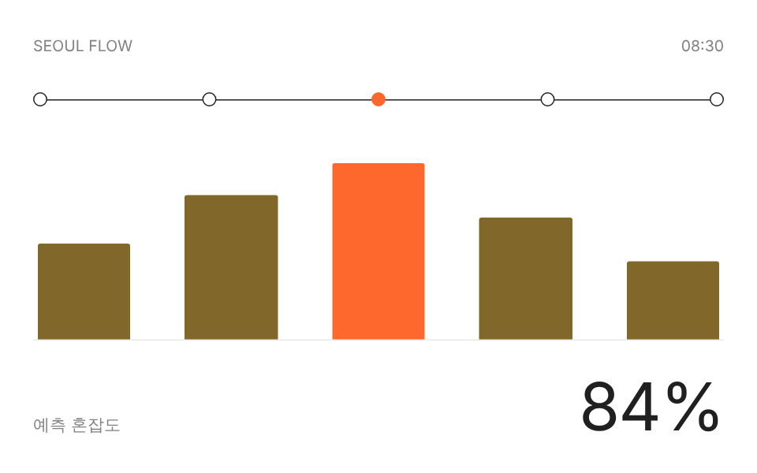
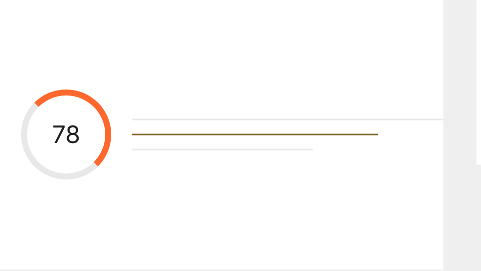
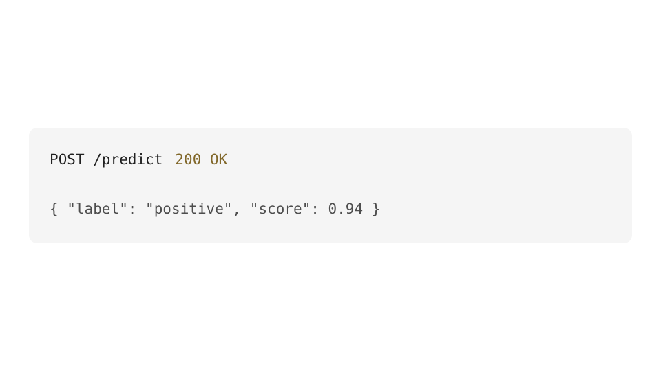

AI Backend · Python / FastAPI
데이터를 정리하고,
API로 연결합니다.
Python으로 데이터를 정리하고 FastAPI로 API를 만드는 공부를 하고 있습니다. 팀 프로젝트에서는 전처리와 백엔드 구현을 주로 맡았습니다.
PROJECTS
대표 프로젝트
수업과 팀 프로젝트에서 제가 직접 맡은 작업을 정리했습니다.

01 · AI SERVICE
지하철 혼잡도 예측 서비스
시간대와 날씨 데이터를 이용해 역별 혼잡도를 예측하고, 결과를 API와 대시보드로 제공했습니다.
- 문제결측치와 노선별 데이터 편차로 모델 성능 저하
- 기여전처리 파이프라인, 예측 모델, FastAPI 구현
- 결과정확도 72% → 84%, API 응답 35% 개선
해결 과정 자세히 보기
전체 평균으로 처리하던 결측치를 노선과 시간대별 중앙값으로 보정했습니다. 이후 전처리 코드를 함수로 분리하고 테스트를 추가해 학습과 API 예측에서 같은 변환이 적용되도록 만들었습니다.

02 · DATA PRODUCT
학습 패턴 분석 서비스
학습 기록을 분석해 취약 단원과 다음 학습 행동을 제안하는 대시보드입니다.
내 기여 데이터 모델링 · 추천 규칙 · 시각화

03 · NLP API
리뷰 감성 분류 API
한국어 리뷰의 감성을 분류하고 요청 기록을 모니터링하는 REST API입니다.
내 기여 모델 서빙 · 예외 처리 · API 테스트
EXPERIENCE
제가 맡았던 일
기술 이름만 나열하지 않고 어디서 어떻게 사용했는지 적었습니다.
분석과 모델링
Pandas로 탐색과 전처리를 수행하고, 검증 지표를 기준으로 모델을 비교합니다.
근거 프로젝트 · 지하철 혼잡도 예측API와 데이터베이스
FastAPI로 REST API를 설계하고, SQL 데이터 모델과 예외 처리를 구현합니다.
근거 프로젝트 · 리뷰 감성 분류 API협업과 품질
이슈와 PR 단위로 작업하고, README와 테스트를 통해 다른 사람이 재현할 수 있게 합니다.
근거 경험 · 4인 팀 프로젝트CONTACT
AI 백엔드 개발자로
첫걸음을 준비하고 있습니다.
현재 인턴십 또는 신입 기회를 찾고 있습니다. 궁금한 점이 있다면 편하게 연락해 주세요.